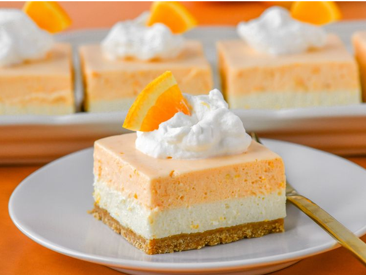

home
Orange Creamsicle Bars

Description
These orange creamsicle bars are the creamy, dreamy, easy, no-bake treat you've been waiting for! Don't be fooled by the number of steps—these bars are not difficult to make.
Ingredients
crust
- 1 1/2 cups finely ground graham cracker crumbs
- 1 tablespoon firmly packed brown sugar
- 1 pinch salt
- 26 tablespoons unsalted butter, melted
Filing
- 1 cup heavy cream, chilled
- 3 tablespoons confectioner's sugar
- 1 3/4 teaspoons vanilla extract, divided
- 1/2 cup freshly squeezed orange juice, divided
- 2 (8 ounce) packages cream cheese
- 1 (14 ounce) can sweetened condensed milk
- 1 tablespoon freshly squeezed lemon juice
- 1 pinch salt
- 1 tablespoon finely grated orange zest
- 1/2 teaspoon finely grated lemon zest
- 2 drops orange food coloring, optional
Steps
- Line a 9x9-inch square pan with enough parchment paper to have overhang on all sides.
- In a small bowl, stir graham cracker crumbs, brown sugar, and salt together until combined. Add in melted butter and stir until mixture resembles wet sand. Pour crust mixture into the prepared pan and press firmly and evenly into the bottom of the pan. Place crust into the freezer to chill while you make the filling.
- In a large bowl, beat heavy cream, powdered sugar, and 1/4 teaspoon vanilla extract with an electric mixer until mixture holds stiff peaks; refrigerate until needed.
- Place gelatin into a small microwave-safe bowl. Pour 1/4 cup orange juice over gelatin and allow it to bloom for 5 minutes.
- Meanwhile, place cream cheese, condensed milk, remaining 1/4 cup orange juice, lemon juice, remaining 1 1/2 teaspoons vanilla extract, and salt into the cup of a high speed blender. Blend ingredients on high speed until thoroughly smooth and combined, stopping to scrape down the sides as needed, 1 to 2 minutes.
- Heat bloomed gelatin in the microwave until melted, about 30 seconds. Stir gelatin until thoroughly mixed and dissolved. With the blender running, pour melted gelatin into the cream mixture and continue to blend on High speed until thoroughly incorporated, about 30 seconds.